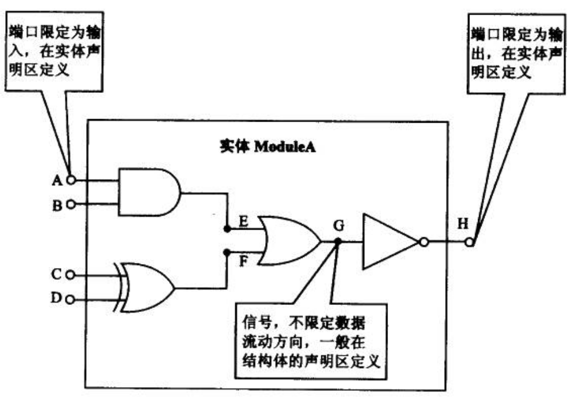
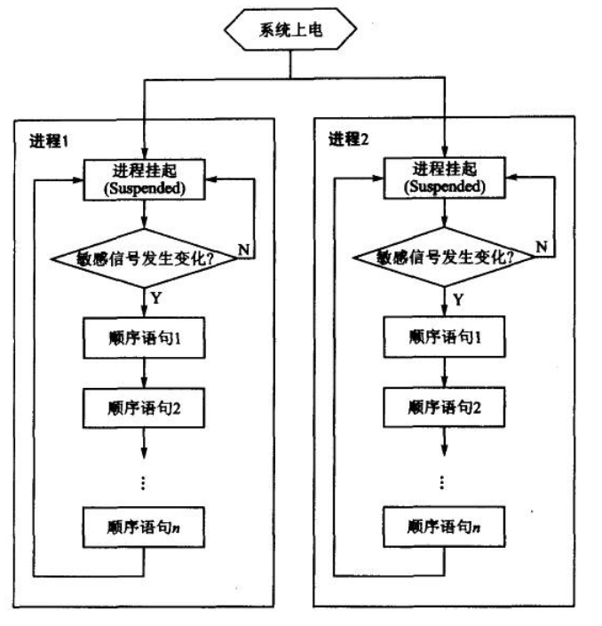

VHDL¶
程序结构¶
一个完整的 VHDL 程序的以及各部分说明如下：
- 库(LIBRARY)
存放已经编译的包集合、实体、结构体和配置等。库的好处在于使设计者可共享已经编译过的设计结果
- 包(PACKAGE)
声明在实体中将用到的信号定义、常数定义、数据类型、元件语句、函数定义和过程定义等
- 实体(ENTITY)
定义电路的输入/输出接口
- 结构体(ARCHITECTURE)
描述电路内部的功能。一个实体可以对应很多个结构体，但在同一时间，只有一个结构体被使用
- 配置(CONFIGURATION)
决定哪一个结构体被使用
实体¶
实体用于定义电路的输入/输出引脚，但并不描述电路的具体构造和实现的功能。
实体声明的格式是：
ENTITY 实体名 IS
[GENERIC (常数名: 数据类型: 设定值)] -- 类属参数说明，"[]" 中内容为可选项
PORT
(
端口名1: 端口方向 端口类型; -- 端口声明语句用分号隔开
端口名1: 端口方向 端口类型;
.
.
.
端口名n: 端口方向 端口类型;
);
END [实体名]; -- 可以只用 END 结束实体声明，不一定加实体名
格式说明：
- 实体名
实体名必须与文件名相同，否则编译时会出错。
- 类属参数
类属参数为实体声明中的可选项，常用来规定端口的大小、信号的定时特征等。
- 端口名
端口名时设计者赋予每个外部引脚的名称。
- 端口方向
端口方向用来定义外部引脚的信号方向时输入还是输出（或者同时可作为输入与输出）
- 端口类型
定义端口的数据类型。 VHDL 是一种强类型语言，即对语句中的所有端口信号、内部信号和操作数的数据类型有严格规定，只有相同数据类型的端口信号和操作数才能相互作用。
结构体¶
结构体描述实体内部的结构或功能。一个实体可对应多个结构体。每个结构体分别代表该实体功能的不同实现方案或不同描述方式。在同一时刻，只有一个结构体起作用，可以通过配置来决定使用哪一个结构体进行综合或仿真。
结构体的语法格式如下：
ARCHITECTURE 结构体名 OF 实体名 IS
[声明语句]
BEGIN
功能描述语句
END [结构体名]
实体名必须与实体声明部分所取的名字相同，而结构体名则可有设计者自由选择，但当一个实体具有多个结构体时，各结构体的取名不可相同。
声明语句用于声明该结构体将用到的信号、数据类型、常数、子程序和元件等。需要注意的是，在一个结构体内声明的数据类型、常数、子程序（包括函数和过程）和元件只能用于该结构体中。如果希望在其它的实体或结构体中引用这些定义，那么需要将其作为包来处理。
功能描述语句具体描述了结构体的功能和行为。功能描述语句可能包含有 5 种不同类型的以并行方式工作的语句结构，这几个语句结构又被称为结构体的子结构。
块语句（BLOCK）： 由一系列并行语句（concurrent statement）组成，从形式上划分出模块，改善程序的可读性，对综合无影响。
进程语句（PROCESS）： 进程内部为顺序语句，而不同进程间则是并行执行的。进程只有在某个敏感信号发生变化时才会触发。
信号赋值语句： 将实体内的处理结果向定义的信号或端口进行赋值。
子程序调用： 调用过程（PROCEDURE）或函数（FUNCTION），并将获得的结果赋值给信号。
元件例化语句： 调用其它设计实体描述的电路，将其作为本设计实体的一个元件。元件例化时实现层次化设计的重要语句。
库与包的调用¶
当要引用一个库时，首先要对库名进行说明，其格式为：
LIBRARY 库名; -- 如 LIBRARY IEEE; 即调用IEEE标准库
对库名进行说明后，就可以使用库中已编译好的设计。而对库中程序包的访问，则必须通过 USE 语句实现，其格式为：
USE 库名.程序包名.项目名; -- 如 USE IEEE.Std_logic_1164.ALL;
其中，关键字 ALL 表示本设计实体可以引用次程序包中的所有资源。
虽然 NUMERIC_STD 有时候操作有点繁琐，但是更加规矩，并且可以有效避免一些错误，所以应该首选使用该库文件。一般来说，以下三行代码足以应付大部分的 VHDL 程序设计了。调用库和程序的语句本身在综合时并不消耗更多的资源。
library ieee;
use ieee.std_logic_1164.all;
use ieee.numeric_std.all;
基本数据类型¶
预定义数据类型¶
常见的预定义数据类型及其简要说明如下：
布尔量（boolean）：取值位false和true，用于逻辑运算
位（bit）：取值为0和1，用于逻辑运算
位矢量（bit_vector）：基于bit类型的数组，用于逻辑运算
整数（integer）：整数的取值范围是 -(2^31 -1) ~ (2^31 -1)，可用 32 位 有符号的二进制数表示，用于数值运算
实数（real）：实数的取值范围是 -1.0E38 ～ +1.0E38，仅用于仿真，不可综合
时间（time）：完整的时间类型包括整数和物理量单位两部分，整数与单位之间至少留 1 个空格，如 20 ms、 30 us 等。整数部分取值范围与 integer 相同。此类型仅用于仿真，不可综合
布尔数据类型
布尔数据类型实际上是一个二值枚举型数据类型，取值为 false 和 true。
位数据类型
位与布尔一样，同属二值枚举型数据类型。取值为 0 或者 1。对应于实际电路中的低电平与高电平。 bit 类型的数据对象可以进行 “与”、“或”、“非”等逻辑运算，结果仍为 bit 类型。
位矢量数据类型
位矢量是基于位类型的数组。使用 bit_vector 时，必须注明数组中的元素个数和排列方向。例如：
signal a: bit_vector(0 to 7);
信号 a 被定义成一个具有 8 个元素的数组，而且它的最高位为 a(0)，而最低位为 a(7)。
若希望这个数组的排列符合日常使用的顺序，即最高位为 a(7)，而最低位为 a(0)，则应将该信号声明语句改写成：
signal a : bit_vector(7 downto 0);
关键字 to 表示数组从左到右是生序排列，而 downto 则是降序排列。
整数数据类型
整数类型的数包括正整数、负整数和零。 在 VHDL 中，整数的取值范围为 -(2^31 -1) ~ (2^31 -1)。整数类型的数常用于加、减、乘、除四则运算。在使用整数时，必须用 range … to … 限定整数的范围，综合器将根据所限定的范围来决定此信号或变量的二进制数的位数。若所设计的整数范围包括负数，则该数将以二进制补码的形式出现。
IEEE 预定义标准逻辑位与矢量¶
在 IEEE 库的程序包 std_logic_1164 中，定义了两个十分重要的数据类型，即标准逻辑位 std_logic 和标准逻辑矢量 std_logic_vector。
标准逻辑位数据类型
标准逻辑位数据类型共定义了 9 种信号状态。
U ： 未初始化的
X ： 强未知的
0 ： 强 0
1 ： 强 1
Z ： 高阻态
W ： 弱未知的
L ： 弱 0
H ： 弱 1
- ： 忽略
std_logic 的信号定义比 bit 类型对数字电路的逻辑特性描述更完整，更真实。 std_logic 中的 X 态和 Z 态可以使设计者模拟一些未知的和高阻态的线路情况，“-” 态常用于一些 boolean 表达式的化简。但就综合而言，只有 4 种状态可被综合，即 0、1、“-”和 Z。其它态虽然不可综合，但对行为仿真仍有十分重要的意义。
标准逻辑位矢量数据类型
标准逻辑位矢量是基于 std_logic 类型的数组。简而言之， std_logic_vector 和 std_logic 的关系就像 bit_vector 与 bit 的关系。
需要强调的是，使用 std_logic 和 std_logic_vector 时，一定要调用 IEEE 库中的 std_logic_1164 的程序包。
用户自定义的数据类型¶
用户自定义的数据类型主要有枚举类型（enumerated types）和数组类型（array types）等，前者常用于状态机描述，而后者常用于 ROM 和 RAM 的描述等。
枚举类型
枚举类型的语法格式如下：
type 数据类型名 is (元素1, 元素2, ...);
在状态机描述中，常常使用枚举类型为每一状态命名，使程序更具有可读性。例如：
type state_type is (start, step1, step2, stop);
signal state : state_type;
上面这个例子为状态机定义了 4 个状态： start、step1、step2、stop。表征当前状态的信号 state 就在这 4 个状态中取值。
数组类型
数组类型常用于组合同样数据类型的元素，其语法格式如下：
type 数组名 is array (范围) of 数据类型;
下面是几个数组定义的例子：
type byte is array (7 downto 0) of bit; -- 1 byte=8 bits
type word is array (31 downto 0) of bit; -- 1 word= 32 bits
数据对象¶
在 VHDL 中，数据对象（data object）有 3 类: 信号（signal）、变量（variable）和常量（constant）。
VHDL 中的变量和常量与软件高级语言中的变量和常量相似，而信号则具有更多的硬件特征，是硬件描述语言所特有的数据对象。
信号¶
信号是用来描述实体内部节点的重要数据类型。
从图中可以看出，信号(signal)与端口(port)之间的相似之处和差异点。信号与端口都描述了电路中实际存在的节点（node），只是信号描述的是实体内部的节点，而端口则描述了实体与外界的接口。在语法上，信号的声明与端口的声明很相似，下面是信号声明的语法格式：
signal 信号名: 数据类型 [:= 初始值]; --初始值仅在仿真时有意义，综合时将忽略此值
对比信号声明与端口声明的格式可以发现，除了端口声明中规定的方向之外，二者无任何差别（虽然信号声明比端口声明多了初始值的赋值，但是这一赋值仅在仿真时有意义，综合器会忽略这一赋值。因此在实际应用中，基本不使用初始值赋值语句）。换句话说，可以将信号理解为“实体内部不限定数据流动方向的端口”，或者将端口理解为“限定数据流动方向的信号”。因此，信号赋值语句同样适用于端口。
信号赋值语句的格式如下：
目标信号名 <= 表达式;
信号赋值语句同样适用于位矢量和标准逻辑矢量，只要赋值符号左、右两边的位数相同即可。
需要特别强调的是，信号的赋值具有“非立即性”，即会有延时。这与实际硬件的传播延迟特性十分吻合。
变量¶
变量只能在进程和子程序中使用，主要用于描述算法和方便程序中的数值计算。
定义变量的语法格式如下：
variable 变量名: 数据类型 [:= 初始值]; --初始值仅在仿真时有意义，综合时将忽略此值
定义变量与定义信号的语法格式十分相似，只是将关键字 signal 变成 variable。与信号一样，变量的初始值赋值只在仿真中有用，综合时将被忽略，因此在实际应用中很少对变量赋初值。虽然二者语法格式十分相似，但在程序中的位置却不同。
变量赋值语句的格式如下：
目标变量名 := 表达式;
表达式可以是一个数值，也可以是一个与目标变量数据类型相同的变量，或者是运算表达式。
变量与信号的区别不仅仅再与声明与赋值语句的格式，最重要的区别在于信号与实际电路的某个节点或信号线对应，因此硬件具有传播延迟特征，所有信号的赋值具有延时特性；而变量是一个抽象值，它不与任何实际电路连线对应，因此它的赋值是立即生效的。
在实际应用中，信号的行为更接近硬件的实际情况，因此将更多时用信号进行电路内部数据传递。只有在描述一些算法时，才用到变量。当然，有些情况下（如作矢量的索引值等）只能时用变量。
常数¶
VHDL 中的常数与软件高级语言中的常数十分相似，作用如下：
保证该常数描述的那部分数据在程序中不会因操作被改变；
对程序中的某些关键数值进行命名，可以提高程序的可读性；
将出现次数较多的关键数值用常数表示，可以使程序易于修改：只需修改常数就可以替换所有相关数值。
定义常数的语法格式如下：
constant 常数名 : 数据类型 := 设置值
运算符¶
VHDL 的运算符主要有 4 种：算术运算符、并置运算符、关系运算符和逻辑运算符。
算术运算符¶
运算符 |
含义 |
备注 |
|---|---|---|
+ |
加 |
一般情况下，+号两边只能是整形信号（变量）。但若事先调用了 IEEE 库中的 std_logic_1164 和 std_logic_unsigned(或 std_logic_signed)程序包，则+号两边可以是：1）std_logic_vector+std_logic_vector; 2)std_logic_vector+integer; 3)integer+std_logic_vector; 4)integer+integer |
- |
减 |
同上 |
* |
乘 |
一般情况下，*号两边只能是整形信号（变量）。但若事先调用了 IEEE 库中的 std_logic_1164 和 std_logic_unsigned(或 std_logic_signed)程序包，则 * 号两边可以是：1）std_logic_vector * std_logic_vector; 2)integer * integer |
/ |
除 |
|
** |
乘方 |
|
MOD |
求模 |
|
REM |
求余 |
|
ABS |
求绝对值 |
并置运算符¶
并置运算符 “&” 用于将多个元素或矢量连接成新的矢量。例如：
signal A : std_logic_vector(3 downto 0);
signal B : std_logic_vector(1 downto 0);
signal C : std_logic_vector(5 downto 0);
signal D : std_logic_vector(4 downto 0);
signal E : std_logic_vector(2 downto 0);
.
.
.
C<=A&B;--矢量于矢量并置
D<=A(1 downto 0)&B(1 downto 0)&'1';--矢量与元素并置
E<=B(0)&A(1)&'0';--元素与元素并置
关系运算符¶
VHDL 预定义的关系运算符如下所列：
= 等于
/= 不等于
< 小于
<= 小于或等于
> 大于
>= 大于或等于
关系运算符的作用是将相同数据类型的数据对象进行数值比较或关系排序判断，并将结果以 boolean 类型的数据表示，即 true 或 false。
VHDL 规定，“=” 和 “/=” 的操作对象可以是 VHDL 种任何数据类型构成的操作数；其余关系运算符的操作对象，则仅限于整数数据类型、枚举数据类型以及由整数型或枚举型数据类型元素构成的一维数组。
需要注意的是，“小于或等于”关系运算符 “<=” 的形式与信号赋值操作符一模一样。判别二者的关键在于其使用环境：在条件语句（如 if_then_else、when 等）中的条件式（即条件判断语句）中出现的 “<=” 是关系运算符，其它情况则是信号赋值操作符。
逻辑运算符¶
VHDL 共定义了 7 种逻辑运算符。
AND 与
OR 或
NOT 非
NAND 与非
NOR 或非
XOR 异或
XNOR 同或
逻辑操作符的操作对象一般为以下 5 种数据类型之一： boolean、bit、bit_vector、std_logic 和 std_logic_vector。
虽然 NOT 比其它逻辑运算符的优先级高，但为了避免犯错，在写程序时仍应用括号将 NOT 与其对应的操作数括起来。其它逻辑运算符也应照此处理。例如：
A <= B AND (NOT C);
A <= (B AND C) XOR (C AND D);
A <= (NOT (B AND C)) NAND (C XOR D);
这样可使整个逻辑表达式层次清除，提高程序的可读性，同时方便查错。
并行语句¶
并行语句（concurrent statements）是硬件描述语言区别于一般软件程序语言的最显著的特点之一。所有并行语句在结构体中的执行都是同时进行的，即它们的执行顺序与语句书写的顺序无关。
所谓 “并行”，指的是这些并行语句之间没有执行顺序的先、后之分，但并不意味着并行语句内部也一定是并行方式运行的。事实上，并行语句内部的语句运行可以是并行的（如块语句），也可以是顺序的（如进程）。
VHDL 的并行语句主要有以下 6 种：
进程语句
并行信号赋值语句
并行过程调用语句
元件例化语句
生成语句
块语句
并行信号赋值语句¶
并行信号赋值语句又分为以下 3 种类型：
简单信号赋值语句
选择信号赋值语句
条件信号赋值语句
这 3 种信号赋值语句的赋值目标都必须是信号。下面分别介绍这几种并行信号赋值语句。
简单信号赋值语句
简单信号赋值语句它的语句格式如下：
目标信号名 <= 表达式;
因为 VHDL 是强类型语言，所以目标信号的数据类型必须与赋值符号 “<=” 右边表达式的数据类型一致。
选择信号赋值语句
选择信号赋值语句的格式如下：
with 选择表达式 select
赋值目标信号 <= 表达式1 when 选择值1,
表达式2 when 选择值2,
.
.
.
表达式n when others;
从 with_select 语句的格式不难猜出它的用法：当“选择表达式”等于某一个“选择值”时，就将其对应的表达式的值赋给目标信号；若“选择表达式”与任何一个“选择值”均不相等，则 when others 前的表达式的值赋给目标信号。
使用 with_select 语句的注意事项：
“选择值”要覆盖所有可能的情况，若不可能一一指定，则要借助 others 为其它情况找一个“出口”；
“选择值”必须互斥，不能出现条件重复或重叠的情况。
条件信号赋值语句
选择信号赋值语句简单、易用，但它仅对某一特定信号进行选择值的判断（所以叫“选择信号赋值语句”），当粗要对较多信号条件进行判断时，它就无能为力了。这时，则需要用到条件信号赋值语句。
条件信号赋值语句的格式如下：
赋值目标信号 <= 表达式1 when 赋值条件1 else
表达式2 when 赋值条件2 else
.
.
.
表达式n-1 when 赋值条件n-1 else
表达式n;
在执行 when_else 语句时，赋值条件按书写的先后顺序逐项测试，一旦发现某一项赋值条件得到满足，即将相应表达式的值赋给目标信号，并不再测试下面的赋值条件。换言之，各赋值子句有优先级的差别，按书写先后顺序从高到低排列。
进程语句¶
进程语句 process 可以说是 VHDL 语言中最重要的语句之一，它的特点如下：
进程本身是并行语句，但其内部则为顺序语句
进程只有在特定的时刻（敏感信号发生变化）才会被激活
进程语句的语法格式
process 语句的语法格式有如下两种：
process 语法格式1：
[进程标号:] process (敏感信号参数表)
[声明区];
begin
顺序语句
end process [进程标号];
process 语法格式2：
[进程标号:] process
[声明区];
begin
wait until (激活进程的条件);
顺序语句
end process [进程标号];
上面这两种语法格式是等价的，但一般只采用第 1 种语法格式，而避免使用 wait 语句。
下面对语法格式1 种的各项进行说明：
- 进程标号
简单地说，就是给进程起名。这个标号不是必须的，在大型的多个进程并存的程序中，标号可提高程序的可读性。
- 敏感信号参数列表
如前所述，进程只在敏感信号发生变化的情况下被激活，而这些敏感信号就包括在敏感信号参数表中。
注意：一个进程可有多个敏感信号，任一敏感信号发生变化都会激活进程，各敏感信号间以逗号隔开。
- 声明区
定义一些仅在本进程中起作用的局部量，最常在此处定义的是变量。
注意： 信号是全局变量，不可在此处声明。
- 顺序语句
按书写顺序执行的语句，如 if_then_else 和 case 语句.
注意：所谓“顺序执行”是指在仿真意义上具有一定的顺序性（并不意味着这些语句对应的硬件结构也有相同的顺序性）
进程的工作原理
下图说明了进程工作的基本原理.
当进程的敏感信号参数表中的任一敏感信号发生变化时，进程被激活，开始从上而下按顺序执行进程中的顺序语句；当最后一个语句执行完毕，进程刮起，等待下一次敏感信号的变化。从系统上电开始，这个过程就周而复始地进行，就像软件中的死循环。
虽然进程内部的语句是顺序执行的，但进程与进程之间则是并行的关系。例如，一个 architecture 中有若干个 process，颠倒各 process 在程序中的顺序并不会造成仿真与综合结果的改变。
进程与时钟
虽然进程可用来描述组合逻辑电路，但最重要的还是用它来设计时序电路（或是时序电路与组合逻辑电路的综合电路）。对于组合逻辑电路的设计，用前面所提到的一些语句和关系符就可以实现，而时序电路的设计则必须借助 process 的力量。
如果设计时序电路，就一定要对时钟有所了解，因为大多数时序电路的正常工作依赖于时钟。这里仅讨论以下两个问题：1）时钟与进程的关系；2）时钟沿在 VHDL 中的描述方法。
- 时钟与进程的关系
进程是由敏感信号的变化来启动的，因此可将时钟作为敏感信号，用时钟的上升沿或下降沿来驱动进程语句的执行。
在每个时钟上升沿，进程都被激活，进程中的语句被执行。有一点要特别强调：是在每个上升沿启动一次进程（执行进程内所有语句），而不是在每个上升沿执行一条语句。
- 时钟沿的 VHDL 描述方法
假设时钟信号的为 clock，且数据类型为 std_logic，则时钟沿在 VHDL 中的描述方法如下：上升沿描述： clock’ event and clock=’1’，下降沿描述： clock’ event and clock=’0’
其中， clock’event 表示在 clock 信号上有事件发生（即信号发生变化）。若变化后 clock 值为 ‘1’，则表示时钟从 ‘0’ 变成 ‘1’，因此 clock’event and clock=’1’ 就表示时钟上升沿。
除了前面的表示方法外，还有两个预定义的函数来表示时钟沿：上升沿描述 rising_edge(clock)，下降沿描述 falling_edge(clock)。
进程要点
进程有如下要点：
进程语句本身是并行语句，但其内部为顺序语句。
进程在敏感信号发生变化时被激活。
在同一进程中对同一信号多次赋值，只有最后一次生效。
在不同进程中，不可对同一信号进行赋值。
一个进程不可同时对时钟上、下沿敏感。
进程中的信号赋值是在进程挂起时生效的，而变量赋值则是即时生效的。
顺序语句¶
顺序语句是与并行语句相对而言的，其特点是：每一条顺序语句的执行顺序与其书写顺序对应，改变顺序语句的书写顺序有可能改变综合的结果。顺序语句只能出现在进程和子程序中。
前面介绍进程时提到过，所谓“顺序执行”是指仿真意义上具有一定的顺序性（或者说在逻辑上有先、后之分），并不意味着这些语句对应的硬件结构也有相同的顺序性。当顺序语句综合后，映射为实际的门电路，系统一上电，这些门电路就同时开始工作。电路可实现逻辑上的顺序执行，实际上所有门电路是并行地工作，并没有先、后之分。这种以并行的工作方式实现顺序的逻辑是硬件描述语言的一大特点，也是进程可以在被激活的瞬间执行完进程中所有语句的原因。
VHDL 中主要的顺序语句有 6 种：赋值语句、流程控制语句、空操作语句、等待语句、子程序调用语句和返回语句。
赋值语句¶
赋值语句包括信号赋值语句和变量赋值语句。信号赋值语句在进程与子程序之外是并行语句，在进程与子程序之内则为顺序语句；而变量赋值语句只存在于进程和子程序中。
信号和变量的一些不同之处：
声明形式与赋值符号不同。变量声明为 variable，赋值符号为“:=”；而信号声明为 signal，带入语句采用“<=”带入符。
信号在结构体中、进程外定义，而变量在进程内定义。换句话说，信号的有效域为整个结构体，可在不同进程间传递数值；变量的有效域只是定义该变量的进程，不能为多个进程所用。
操作过程不同。在进程中，便来嗯赋值语句一旦被执行，目标变量立即被赋予新值，在执行下一条语句时，该变量的值为上一句新赋的值；而信号的赋值语句即使被执行，也不会使信号立即发生代入，下一条语句执行时，仍使用原来的信号值（信号是在进程挂起时才发生代入的）。
流程控制语句¶
常用的流程控制语句有 3 个：if 语句、case 语句和 loop 语句。
if 语句
if 语法格式有 3 种。
if 语法格式1：
if 条件式 then
顺序语句
end if;
if 语法格式2：
if 条件式 then
顺序语句
else
顺序语句
end if;
if 语法格式3：
if 条件式1 then
顺序语句
elsif 条件式2 then
顺序语句
.
.
.
else
顺序语句
end if;
以上 3 种格式的 if 语句的执行流程，与软件编程语言中的 if 语言相差无几。
格式1：判断条件式是否成立。若条件成立，则执行 then 与 end if 之间的顺序语句；若条件不成立，则调过不执行，if 语句结束。
格式2：判断条件式是否成立。若条件成立，则执行 then 与 else 之间的顺序语句；若条件不成立，则执行 else 与 end if 之间额的顺序语句。
格式3：自上而下逐一判断条件式是否成立。若条件成立，则执行相应的顺序语句，并不再判断其它条件式，直接结束 if 语句的执行。其执行流程与 when_else 相似。
使用 if 语句时的要点：
if 语句可以嵌套，但层数不宜过多。
前面的 if 语句格式 3 和 when_case 一样，用于有优先级的条件判断，因此各条件式中的条件可以重叠。如果所需判断的条件没有优先级的差别，且条件之间没有重叠的情况，那么建议使用 case 语句。
用 if 语句描述异步复位信号和时钟沿时，只能用 if_elsif_end if 的格式，不能不出现 else。
在进程中用 if 语句描述组合逻辑电路时，务必覆盖所有的情况，否则综合后将引入所存其，违背设计初衷。
设计组合进程的要点：
所有在该进程中被读取的信号都必须加入敏感信号变量表；否则，当没有被包括在敏感变量表中的信号发生变化时，进程不能即时生成新的输出，综合器可能会误以为设计者希望存储数据而引入锁存器。这样就违背了组合逻辑的原则：当前输出只与当前输入有关系。
必须在所有条件下指定输出值。在没有指定输出值的条件下，综合器同样可能误以为设计者希望存储数据而引入锁存器。
case 语句
case 语句根据满足的条件直接选择多项顺序语句中的一项执行，其语法格式如下：
case 表达式 is
when 选择值[|选择值] => 顺序语句;--若有多个选择值，则用“|”间隔
when 选择值[|选择值] => 顺序语句;--“=>”相当于 if 语句中的 then
.
.
.
when others => 顺序语句;
end case;
case 语句的使用要点：
选择值不可重复或重叠。例如不可同时出现两次 when “00”，也不可同时出现 when “00”|”01” 和 when “00”|”11”
当 case 语句的选择值无法覆盖所有情况时，要用 others 指定未能列出的其它所有情况的输出值。
用 case 语句设计组合进程的要点与用 if 语句设计组合进程的要点相同。
loop 语句
loop 语句时循环语句，它有 3 种常见格式（loop_exit、for_loop 和 while_loop），这里介绍最常用的 for_loop 语句，其语法格式如下：
[loop 标号:] for 循环变量 in 循环次数范围 loop
顺序语句
end loop [loop 标号];
循环变量：这是一个临时的变量，仅在此 loop 语句种有效，因此不需要事先定义。但要注意，在 process 的声明区不要定义与此同名的变量。
循环次数范围：主要有两种格式，即“… to …”和“… downto …”。循环变量从循环次数范围的初值开始，每执行完一次顺序语句后递增或递减1，直到达到循环次数范围的终值为止。
loop 标号: 不是必需的，可以省略。
使用 loop 语句时，要注意循环次数范围只能用具体数值表示。
null 语句
null 语句即空操作语句。它不执行任何操作，只是让程序接着往下执行。null 语句一般用在 case 语句中，用于表示在某些情况下对输出不作任何改变。所谓的“不作任何改变”，实质上隐含了锁存信号的意思。因此在设计纯组合逻辑电路，就不要使用 null 语句。
VHDL中数据类型转换与移位¶
signed、unsigned以及std_logic_vector之间的区别¶
首先就是 signed 与 unsigned 这两种数据类型。他们的定义为：
type UNSIGNED is array (NATURAL range <>) of STD_LOGIC;
type SIGNED is array (NATURAL range <>) of STD_LOGIC;
与 std_logic_vector 的定义完全相同，所不同的是表示的意义不同。举例来说：
“1001” 的含义对这三者而言是不同的：
std_logic_vector : 简单的四个二进制位；
unsigned : 代表数字9；
signed : 代表数字 -7（补码表示的）；
NUMERIC_STD¶
使用 NUMERIC_STD 可以完全替代 std_logic_arith、std_logic_unsigned、std_logic_signed 这三个库文件！
首先，NUMERIC_STD 这个库文件才是血统最正的IEEE库文件！！上述的其他三个其实都是 Synopsis 这个公司的，但是由于这个公司抢先了一步，所以占据了大量的用户资源。
std_logic_arith、std_logic_unsigned、std_logic_signed 的问题在于当在同一文件中同时使用 signed 和 unsigned 时，会出现函数重载的冲突，导致错误。
其次，NUMERIC_STD 是完全基于 signed 和 unsigned 所写的算术重载函数和数据类型转换函数。不管是 INTEGER 还是 STD_LOGIC_VECTOR 要进行算术运算，都必须转换为 signed 和 unsigned 两种数据类型。
下面举个例子来说明NUMERIC_STD库的使用。
DOUT <= std_logic_vector(to_unsigned(0,64));
DOUT(to_integer(unsigned(DIN))) <= '1';
shift_left() and shift_right()¶
r_Unsigned_L <= shift_left(unsigned(r_Shift1), 1);
r_Signed_L <= shift_left(signed(r_Shift1), 1);
r_Unsigned_R <= shift_right(unsigned(r_Shift1), 2);
r_Signed_R <= shift_right(signed(r_Shift1), 2)；